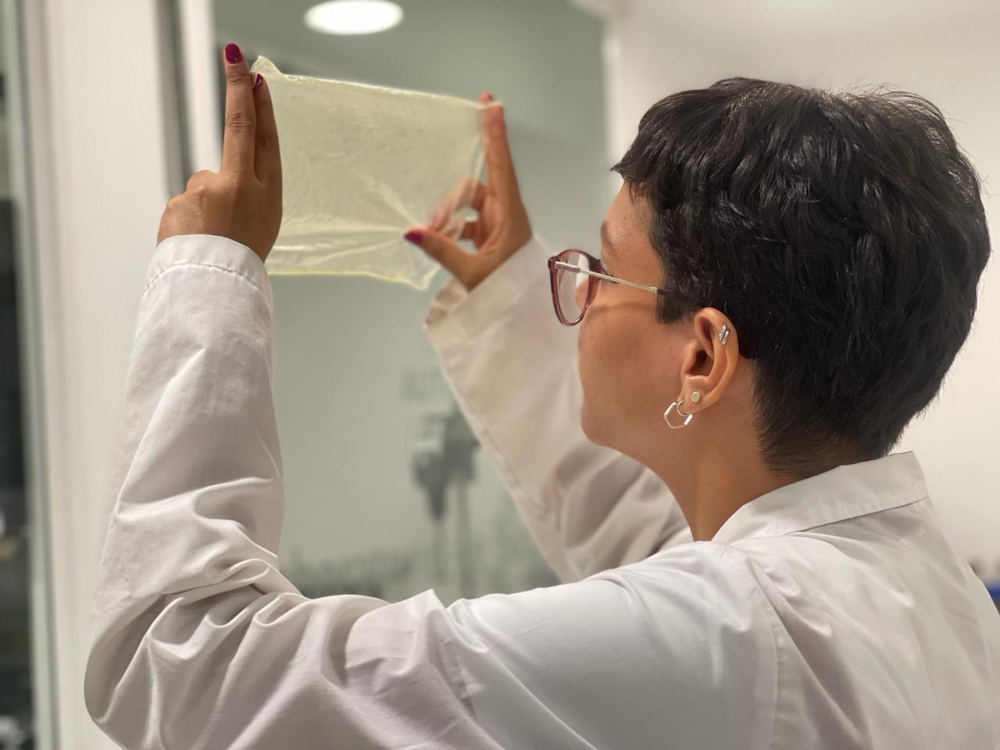
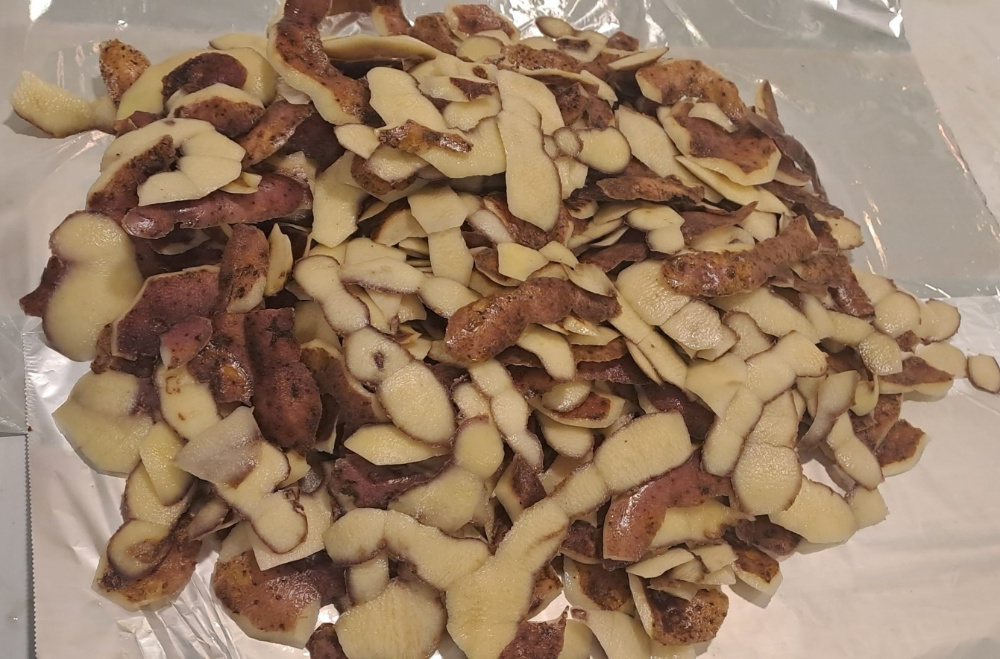

Ctrl + P →
Destino: Guardar como PDF o tu impresora · Diseño: Horizontal ·
Márgenes: Ninguno · Tamaño: A4 · activa “Gráficos de fondo”.
Imprime a doble cara (voltear por el borde largo; si las caras no calzan, prueba “borde corto”).
Luego dobla en 3 por las líneas guía. (Este recuadro no se imprime.)
Comprobé mi hipótesis: sí es posible transformar las cáscaras de papa en un bioplástico flexible, moldeable y biodegradable, usando solo cosas de cocina y una transformación química sencilla (almidón + vinagre + glicerina + calor).
Un residuo que botamos todos los días puede convertirse en un material útil que reemplaza al plástico de un solo uso: es eco-productivo porque casi no cuesta dinero, aprovecha la basura orgánica y contamina menos.
| Etapa | Resultado |
|---|---|
| Mezcla inicial | Líquido blanco con grumos |
| Cocción | ✔ Gel transparente (cambio químico) |
| Secado 2–3 días | ✔ Lámina sólida y flexible |
| Prueba de doblez | ✔ Se dobla sin romperse |
| Enterrado en tierra | ✔ Empieza a degradarse |
“Convertir lo que botamos a la basura en un material que cuida el planeta”

BioPlast Andino: elaboración de un bioplástico biodegradable a partir del almidón de las cáscaras de papa, como alternativa ecológica al plástico de un solo uso.
El plástico de un solo uso puede tardar más de 100 años en degradarse y contamina ríos, mares y suelos. En el Perú la papa es clave (+3 000 variedades) y se cocina en casi todas las casas, así que cáscaras… ¡hay de sobra!
